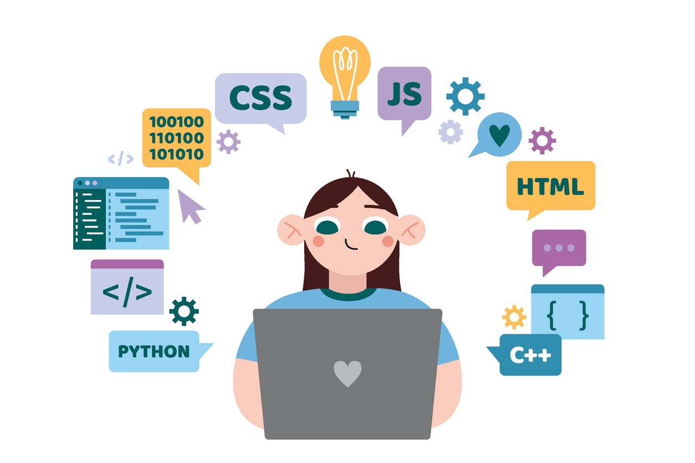

About CodeStart
CodeStart is a beginner-focused website created to help students understand the basics of web development. It introduces JavaScript and CSS in a simple, organized, and approachable way so beginners can learn one step at a time.
The website is designed for learners who may feel unsure when they first begin coding. By combining lessons, examples, and practice activities, CodeStart makes the learning process feel more clear and less stressful.
Our Mission
The mission of CodeStart is to provide a supportive starting point for beginners who want to understand how websites work and how coding can be used to build interactive and visually appealing pages.
Who This Website Is For
- Students who are new to programming
- Beginners learning JavaScript and CSS
- Users who want simple lessons and guided practice
- Anyone interested in the foundations of web development
Why Learn Coding?
Learning coding opens many opportunities in today’s world. It helps users build websites, solve problems, and better understand the technology they use every day.
Even basic coding skills can improve creativity, logical thinking, and confidence when working with digital tools.

What Makes CodeStart Useful
CodeStart is useful because it does more than only explain information. It also gives users practice opportunities, interactive features, and examples that help turn basic ideas into real understanding.